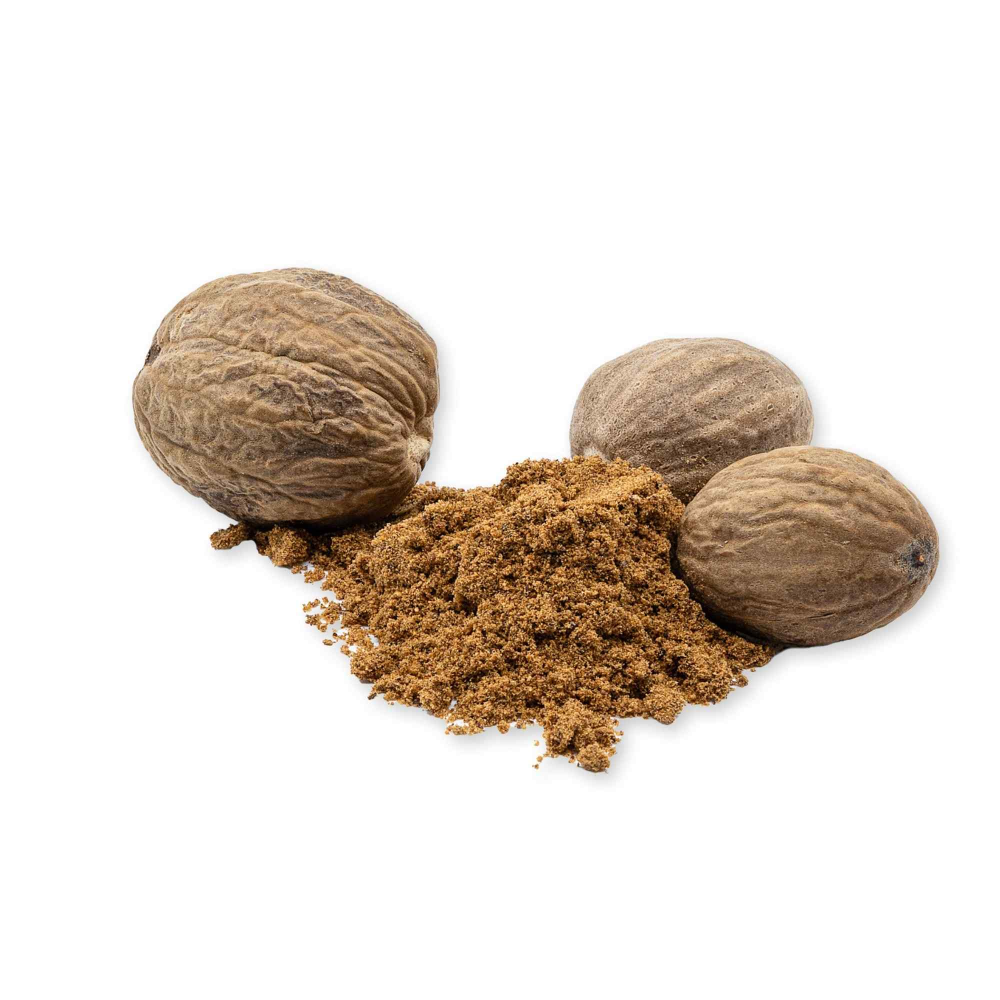

Buy Bulk Wholesale Nutmeg Powder (Ground) & Whole from Indonesia
HS Code:
0908Xa Nutmeg
Nutmeg comes from the seed of the Myristica fragrans tree, a tropical plant native to the Banda Islands, Maluku, Indonesia.

Whole Nutmeg
Nutmeg in its natural whole form preserves maximum freshness and aroma. When grated just before use, it releases a rich, warm, and slightly sweet flavor that enhances both savory dishes and desserts.Ground Nutmeg
A convenient, ready-to-use spice made by finely grinding dried nutmeg seeds. It offers a consistent flavor profile, making it perfect for bakeries, spice blends, beverages, and household kitchens.Nutmeg Oil
Extracted through steam distillation of nutmeg seeds, this oil carries a concentrated aroma and therapeutic properties. Prized for its warming effect.awayNutmeg Mace
The delicate, lacy red covering surrounding the nutmeg seed, dried into a golden-orange spice.Mace has a slightly more delicate and floral flavor than nutmeg, often described as warm, spicy-sweet, and subtly peppery.
Nutmeg Uses
Culinary Uses
- Whole Nutmeg: freshly grated into cakes, coffee, sauces, soups, or curries for a stronger, fresher flavor.
- Ground Nutmeg: sprinkled into baked goods, hot drinks (like lattes or hot chocolate), or spice mixes for cooking.
- Nutmeg Mace: used in broths, sauces, or meat dishes for a softer, more floral taste.
Traditional Health Uses
- For Sleep & Anxiety: a pinch of nutmeg powder mixed into warm milk or tea before bedtime for relaxation.
- For Digestion & Liver: blended into herbal teas or remedies to support digestion and liver health.
- For Toothache: nutmeg oil applied gently to the affected area as a natural pain reliever.
- For Cough & Cold: added to warm drinks or tonics to soothe the throat and reduce coughing.
- For Pain Relief: nutmeg oil massaged onto sore areas, usually diluted with carrier oil.
Beauty & Skin Care:
- Face & Skin Brightening: nutmeg mixed with honey or milk to reduce pigmentation and enhance glow.
- Dark Circles: applied as a natural paste under the eyes to lighten under-eye circles.
- Acne & Pimples: nutmeg paste or oil used to reduce acne, pimples, and scars.
- Skin Whitening: incorporated into natural masks for brighter, even-toned skin.
Hair Care:
- Hair Growth: nutmeg oil blended with hair oils or masks to stimulate the scalp and strengthen hair.
Indonesia Nutmeg Powder (Ground) & Whole for Sale
Indonesia is one of the world’s largest producers of nutmeg, supported by its fertile volcanic soil and tropical climate that create the perfect environment for high-quality nutmeg cultivation.This strong production base allows Indonesia to be a reliable supplier of nutmeg in various forms, including whole nutmeg, ground nutmeg, nutmeg oil, and nutmeg mace, serving both culinary and industrial needs.
Indonesian nutmeg is prized for its warm, sweet-spicy aroma, rich flavor, and wide-ranging applications across food, beverages, traditional medicine, cosmetics, aromatherapy, and etc
With supply options available in bulk and customized grades, Indonesia consistently delivers premium nutmeg products to meet the diverse demands of global markets.
Get Premium Nutmeg Powder (Ground) & Whole for Sale
Are you looking for a reliable supply of premium Nutmeg for your needs, whether in the form of whole nutmeg, ground nutmeg, nutmeg oil, or nutmeg mace, available in small or large quantities and across various grades?You’ve come to the right place! Contact us at OneWholesaleIndo,com , and we will be happy to provide the right solution tailored to your needs.